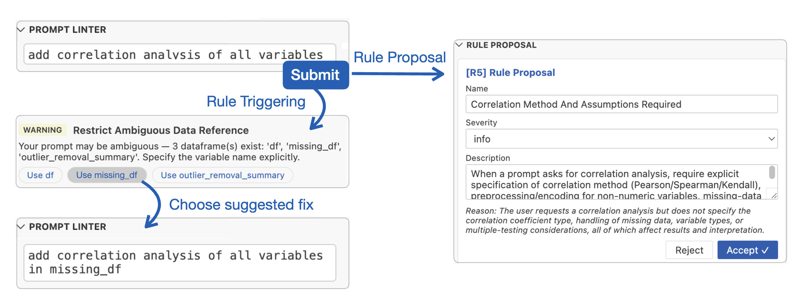
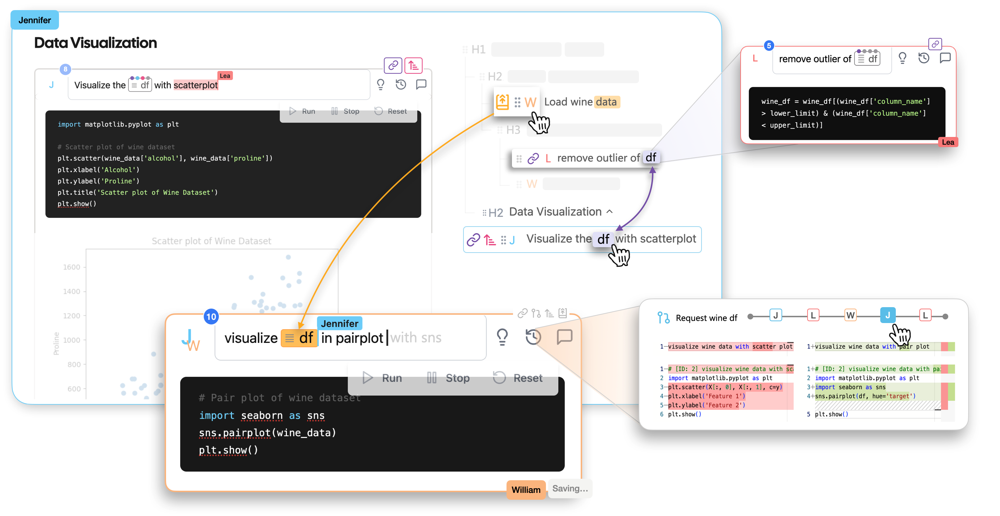
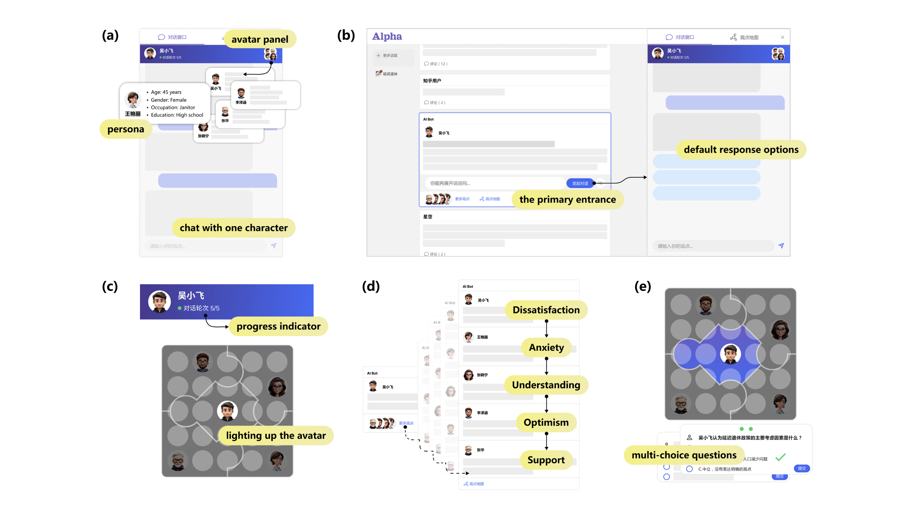
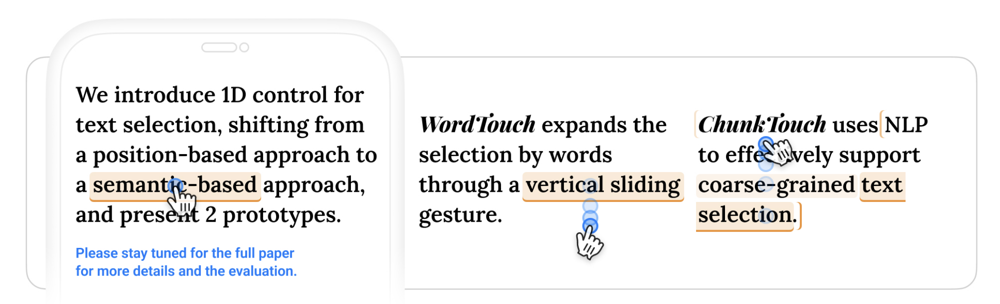
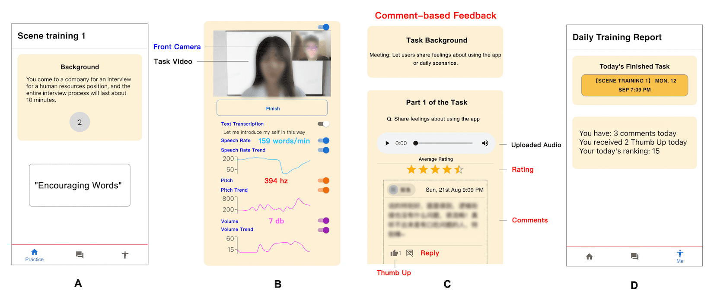
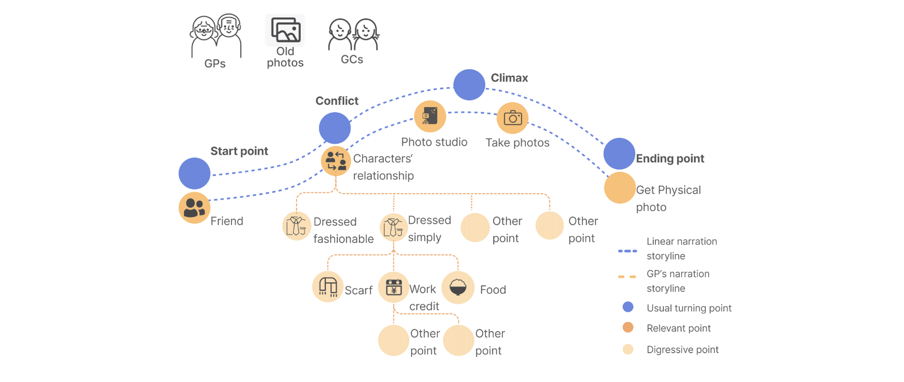
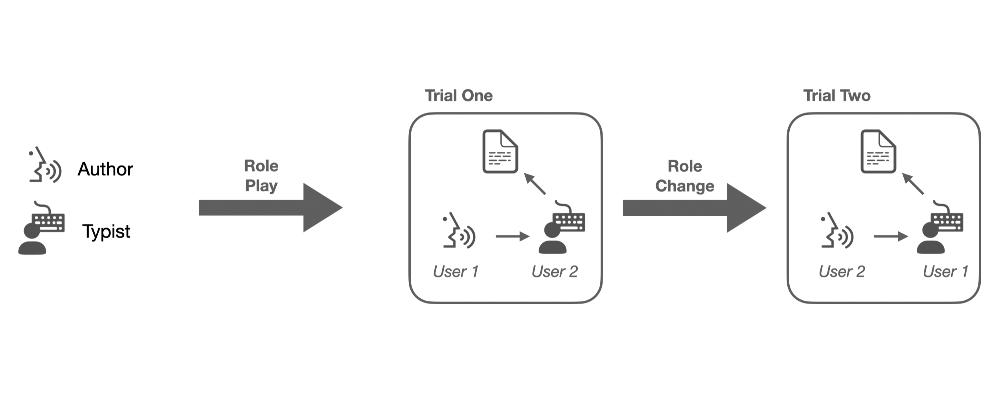

Hi there! I am a PhD student at the University of Waterloo, under the supervision of Dr. Ana Crisan and Dr. Jian Zhao. Before that, I obtained my master's degree from HKUST and my bachelor's degree from CityU HK.
My research interests are building interactive interfaces and empirically understanding the design space of multi-directional human-AI team collaboration. I aim to bridge the gap between end-user group intentions and AI-generated content, with the goal of enhancing controllability and transparency in collaborations.
UIST 2026

A rule-based coordination layer with two interaction mechanisms, intent scaffolding and prompt-time linting, that make analytic intent explicit and actionable during human-AI collaborative data analysis.
CHI 2024

A system to support collaborative prompt engineering by providing referring, requesting, sharing, and linking mechanisms. It assists programmers in comprehending collaborators' prompts and building on their collaborators' work, reducing repetitive updates and communication costs.
CHI 2024

UIST 2023 Demo

CHI 2023

An online tool to support Chinese PwS practicing speaking fuency with 1) targeted stress- inducing practice scenarios, 2) real-time speech indicators, and 3) personalized timely feedback from the community.
CHI 2023
A narrative-based viewer participation tool that utilizes a dynamic graphical plot to reflect chatroom negativity. We discovered that StoryChat encouraged viewers to contribute prosocial comments, increased viewer engagement, and fostered viewers' sense of community.
Ubicomp 2023

This work identified the opportunities in photo-based intergenerational storytelling and highlighted design implications for promoting intergenerational social interaction through AR-based storytelling.
CSCW 2022

By analysing the natural language patterns of both authors and typists, we identified new challenges and opportunities for the design of future dictation interfaces, including the ambiguity of human dictation, the differences between audio-only and with screen, and various passive and active assistance that can potentially be provided by future systems.